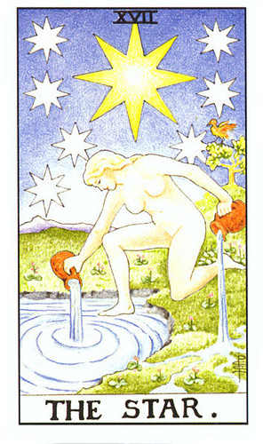

Your Yes/No Tarot Reading Result
Your Question: Unknown
December 30, 2023 19:42

The Star
Upright
The tarot card's answer to your question:
Yes
Card Interpretation
The Star is a symbol of hope and revelation. This card appearing in your yes/no reading indicates that the universe is sending you positive signals. It represents renewal, hope, and inner guidance, suggesting that you are on the right path.
The Star tells you that now is the time to follow your intuition. Whatever choice or decision you're facing, this card encourages you to maintain faith and patience. Even if the road seems long or challenging, the light of the stars will guide you to find your way.